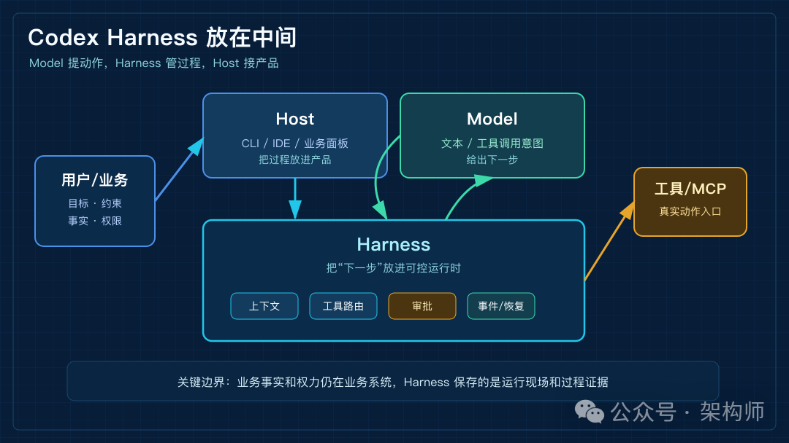
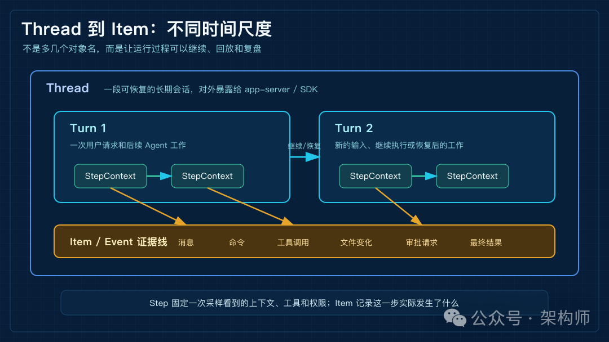
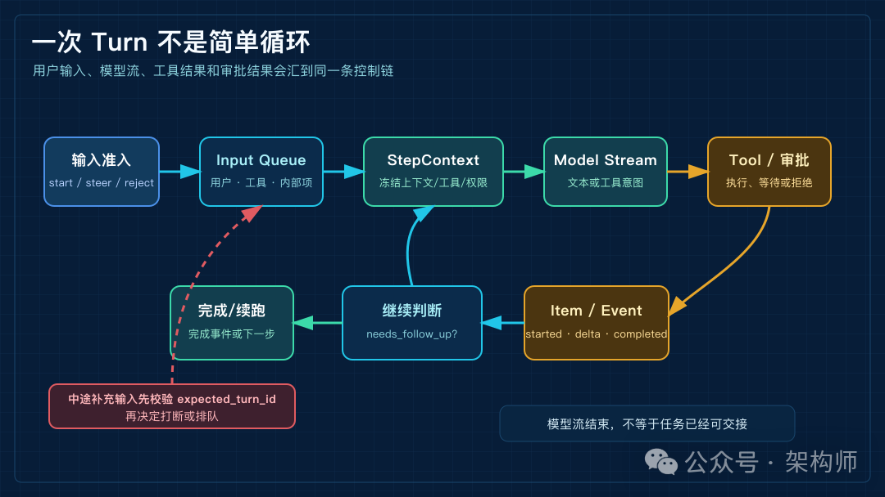
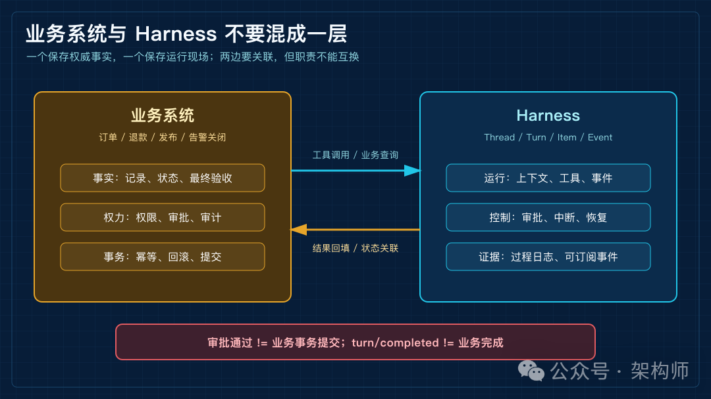

Codex Harness 源码拆解：Agent 控制面如何嵌进业务系统
来源：微信公众号 归档日期：2026-10-06 抓取状态：成功 原文字符：12644｜配图：5 张
摘要速览
- 架构师（JiaGouX） 我们都是架构师！ 架构未来，你来不来？ 国庆这几天，正好把最近对 Harness 和 Agent 运行时的一些学习，陆续整理成几篇文章。 昨天先把总的运行链捋了一遍：Goal 进来以后，Context 怎么装配，模型怎么决定下一步，工具怎么执行，结果又怎么被观察、验证和留下来。
核心内容
（待补充）
可执行启发
（待补充）
我的想法
（待补充）
原文沉淀
来源：https://mp.weixin.qq.com/s/vOiidxV8rURYXoDP1ZmWng 平台：weixin｜作者：架构师 抓取方式：cdp｜字符数：13351｜图片：5
架构师（JiaGouX）
我们都是架构师！ 架构未来，你来不来？
国庆这几天，正好把最近对 Harness 和 Agent 运行时的一些学习，陆续整理成几篇文章。
昨天先把总的运行链捋了一遍：Goal 进来以后，Context 怎么装配，模型怎么决定下一步，工具怎么执行，结果又怎么被观察、验证和留下来。
今天顺着这条线，再往 Codex Harness 的源码里看一层。
一开始很容易被一串对象名带着走：Model、Host、Harness、Thread、Turn、Step、Item、ToolRouter、app-server。名字很多，但多看几层以后，会发现它们想回答的并不是“怎么再调一次模型”，而是一个更靠近工程现场的问题：
怎样把一次模型输出，变成一段可以继续、可以观察、可以审批、可以恢复的工作过程？
只做一次模型调用时，这个问题不明显。用户发一句话，模型回一段文本，调用就结束了。
但 Agent 一旦进入业务系统，事情就没这么干净了。任务跑到一半，用户可能补一句约束；工具已经开始执行，某个动作还要等人确认；前端断开以后，任务也许还要继续。最后系统还得说清楚：Agent 看过什么、调过什么、哪一步被批准了，业务记录有没有真的改。
所以今天不打算把源码文件逐个铺开讲。我更想抓住一条线：模型说“下一步可以这么做”之后，系统怎样让这一步受控地发生，并且留下以后还能复盘的痕迹。
三层关系放在一起看
看 Codex Harness，先把 Model、Harness、Host 三层放在一起，后面很多对象关系会更容易对上。
Model 负责在当前上下文里给出下一步。它可以生成文字，也可以输出结构化的工具调用意图。
Harness 负责把这一步放进运行时。上下文、工具路由、审批、沙箱、事件和恢复，大多在这一层组织起来。
Host 是外壳。Codex CLI 是 Host，IDE 扩展是 Host，未来业务系统里的“帮我处理这张工单”面板，也可以是 Host。
粗略说，模型提出动作，Harness 让动作在边界内发生，Host 把这段过程放进产品。

Codex Harness 的三层位置
图 1：Model 提出动作，Harness 管住运行过程，Host 把这段过程放进产品。
一个物流运营面板里有订单、路线、承运商、异常事件和审批记录。某批货延误了，运营同学让 Agent 看一下能不能改路线。Agent 要先读订单和承运商信息，再比较替代路线，必要时调用改签工具。涉及费用变化或 SLA 风险时，还要停下来等人确认。
这个例子里，业务系统仍然拥有事实。订单状态、用户权限、审批记录、幂等键、外部事务，都在业务后端。
模型只是在当前信息下提出下一步。它可以建议查路线、比较方案、调用工具，但真实动作要经过 Harness 和工具系统。
Harness 保存的是运行现场。当前任务属于哪个 Thread，这一轮 Turn 走到哪里，哪些 Item 已经产生，哪些工具还在执行，是否在等审批，上下文是不是快满了，这些状态都由它记着。
OpenAI 在平台文章和 App Server 文章里给出的分工，大体也是这条线：应用拥有界面、上下文、工具和操作边界；Harness 处理 agent loop、状态、流式事件、工具交互和审批请求。
这个分工写在图上像概念，落到系统里就会变成具体日志和状态。任务哪天出问题，能不能复盘，看的还是这些状态有没有落下来。
Thread、Turn、Step、Item 放在一条时间线里
9 月 25 日我们讲过，从一次 LLM 调用到完整 Harness，中间多出来的不是几段提示词，而是上下文、权限、状态和验证。
昨天那篇 Agent 架构文章里，我们又把它放进一条运行链里看：Goal 进入系统，运行时装配 Context，模型决定下一步，工具执行，结果被观察、验证、记录，再进入下一轮。
再看 Codex，抽象链路就落到了源码对象上。它没有把所有东西塞进一个 loop，而是把运行过程拆成了几种时间尺度。
从 app-server 协议看，Thread 是一段可恢复的长期会话。Turn 是一次用户请求以及随后发生的 Agent 工作。Item 是消息、命令、工具调用、文件变化、审批请求和最终结果这类可记录单元。
有一个边界值得先记住：Thread 是 app-server 协议层对外暴露的对象，Core 内部真正持有输入队列、活动状态和历史的运行时对象叫 Session。协议对象和运行时对象不重名，本身就在提醒这是两层。
源码内部还会出现 Step / StepContext 这一层。一个 Turn 里可能有多次模型采样：先读文件，再跑命令，再根据结果决定下一步。StepContext 固定的是“这一次模型请求看到什么、能调用什么、在哪个环境里执行”。
看 step_context.rs 时，这层的含义会更实一点。文件顶部的注释给它的定位是 request-scoped：随采样请求变化，活动权限绑定到发起它的 Turn。它不只是带着 Turn 和 settings 往下传，而是把 MCP 绑定、ToolRouter、环境快照、能力根、AGENTS.md、token budget 和权限访问一起收进这一次采样请求里。
run_turn 每次捕获这一层，源码注释把意图写得很直白：capture once，让上下文、发给模型的工具说明、实际发生的工具调用共用同一个请求视图。ToolRouter 的定义注释是同一个意思：一份最终确定的工具计划，公布给模型的工具清单和真正可执行的实现，都在里面。模型看到什么，运行时就分派什么，两者来自同一份计划。
这层不是为了多造一个对象，而是在给“下一步”划一致性边界。模型按旧工具说明发起调用、执行时却换了一套权限或工具，就会出现很麻烦的竞态；StepContext 让采样时看到的世界和执行时依据的世界，保持同一次冻结。
所以 Thread、Turn、Step、Item 不是给界面增加几个名词，而是在保存一条可追踪的时间线。

Thread、Turn、Step、Item 的时间尺度
图 2：Thread、Turn、Step、Item 不是名词堆叠，而是在不同时间尺度上保存运行事实。
普通接口调用只关心请求什么时候返回。Agent 任务要多看几步：它先读什么，工具返回什么，用户有没有中途插话，审批卡在哪里，失败以后从哪里继续。
如果这些过程最后只剩一条回答，系统就少了很多证据：Agent 到底看到了什么、做了什么、在哪一步等人、哪一步可以重试。
run_turn 做的不是“再问一次模型”
从源码入口看，run_turn 很容易被简化成一句话：模型给出工具调用，Harness 执行工具，再把结果交回模型。
这句话没错，但只说了最小循环。
实际跑起来时，run_turn 还要处理上下文捕获、模型采样、工具结果回填、输入队列、自动压缩和取消。模型流、工具 future、用户追加输入和审批结果，都会汇到同一条运行链里。
源码里有个小分岔值得留意：输入不是简单追加到 messages 后面。
turn_input.rs 顶部的注释先声明了自己的位置：Core 在这一个地方决定输入是启动 Turn、转向当前 Turn，还是被拒绝；回复在决定之后就返回，不等 prompt hooks，不等上下文更新和 rollout 持久化，也不等采样。被拒绝也不是抛异常了事，而是带原因的明确回复：输入为空、上一个 Turn 还没结束、服务正在下线、期望的 Turn 已经不是当前 Turn，各占一个枚举值。审查和压缩这类内部 Turn，干脆不接受插话。
进了队列，input_queue.rs 又把用户输入、工具输出、内部 response item、agent 间通信分成不同来源。用户在任务中途补的一句话，去向有两种。
开了 InstantInterrupt 特性时，StepContext 会带一个 preempt 取消令牌。采样请求一边读模型流，一边盯着输入队列，用户输入一到就取消这次读取。被打断的采样返回 needs_follow_up，主循环拿着新输入立刻续跑。没开这个特性，或者没赶上打断，输入就排进 pending，在下一次构造模型请求前写进历史。写回的时机也有固定规则：Turn 刚启动，先让新输入被采样；auto-compact 之后，先让模型和工具续跑完。这两个时点暂缓合并。
主循环要不要再问一次模型，判断条件跟着收口：模型的 needs_follow_up，或者队列里还有没消费的输入，满足其一就继续。
这和 AI Agent 架构全链路拆解：从 Planner、Tool、MCP 到 Memory 和 Reflection 那条运行链能接上。Context 不是一袋越塞越长的文本，Act 的返回也不是普通聊天回复。每一份输入进来时，系统先判断它属于当前哪一段运行过程，能不能改变已经在路上的动作，什么时候写进历史。
Codex 和普通 streaming chat loop 的差别，也在这里露出来。
普通 streaming chat 里，前端主要消费文本 delta。Codex 这里，客户端看到的是更细的事件：item/started、文本增量、工具进度、item/completed、审批请求、turn/completed。文本只是其中一种 Item，命令、文件编辑、工具调用、审批也都是运行事实的一部分。
SDK 里的类型也沿着这条线往外露：ThreadEvent 不是只有 final response，ThreadItem 也不是只有 agent message。command execution、file change、MCP tool call、web search、todo list、error，都做成了可订阅的 Item。
这样一来，UI 不必等最终答案才知道发生了什么。IDE 可以把命令 Item 绑定到终端面板，把文件变化绑定到 diff 视图，把文本 delta 放进聊天面板。业务系统也可以把审批请求、工具结果和状态变化投到自己的界面里。
所以这里值得看的，不只是模型能力本身，还有模型能力变成真实动作以后留下的那条过程线。
前面比较 Pi 和 DeepSeek Harness 时，问题其实也是这一类：继续、收口、恢复，最后都要变成状态转换。放到 Codex 里看，输入队列、工具 future、审批结果和事件流，都是为了避免把“模型流结束了”误当成“任务已经可交接”。

一次 Turn 的控制回路
图 3：一次 Turn 里，输入、采样、工具、审批和事件会不断汇合，再决定继续还是结束。
App Server 接的是运行现场
Codex App Server 表面上是一组 JSON-RPC 方法和 WebSocket 通道。放到产品架构里看，它接的正是这个运行现场。
产品可以创建 Thread、恢复 Thread、启动 Turn，也可以追加 steer、中断 Turn、接收流式事件、处理审批请求。运营台、IDE、内部工具或桌面应用，不必自己重写一套 agent loop，就能订阅同一条任务时间线。
官方的 Relay 示例也很典型：产品侧保留业务面板、MCP 工具和人工审批，Harness 负责 loop、状态、流式事件和工具交互。用户看到的是业务产品里的按钮、记录和控制项，不是一个裸露的模型接口。
看 Claude Code Mods 时，能看到另一种打开方式：宿主内部开放工具调用、turn、UI、diff 这些事件切面。Codex app-server 不在同一个层次上，它更像是把 Thread、Turn、Item 和审批事件通过协议接给外部产品。两条路开放的边界不同，但都在说明一件事：运行时控制点正在从平台内部走向产品接口。
有两个细节，真实接入时很容易影响判断。
第一，协议支持中途介入。真实任务不会总是按第一次输入走到底。用户会补约束，系统会发现风险，工具会失败。turn/steer 和 turn/interrupt 这类入口，让产品有机会在任务中途介入，而不是只能等最后答案出来再补救。
TurnSteerParams 里还带着 expected_turn_id，协议注释把它定义为必需的前置条件。中途插话不能只是往会话里塞一句文本，它还带着自己要影响的 active turn。核心侧收到 steer 会先比对当前活跃 Turn 的 id，对不上就按 mismatch 拒绝。前端慢了一拍、用户切了任务，这句补充不会落进任何一段运行过程，而是变成一次调用方看得见的失败。
第二，app-server 的方法安全等级并不一样。文档里提到的 thread/shellCommand 会在 sandbox 之外运行，拥有完整访问能力。也就是说，“接了 app-server”不等于所有动作都天然落在同一层安全模型里。展示、审批、工具执行和业务写入，仍然要分开看。
官方文档也给了边界：codex app-server 命令和 WebSocket transport 都标着 experimental，不支持 production workloads。这个限制不影响我们理解它的架构思路，但会影响真实接入时的判断。
业务状态和运行状态分开看
app-server 可以管理 Thread 生命周期、事件订阅、审批请求和运行状态。业务系统里的订单、退款、发布、告警关闭，还是要回到业务后端。
Agent 的状态和业务状态不是一回事。
前面聊业务语义时，也反复碰到这个边界：对话状态、业务状态和执行状态，不能塞进一个字段。放到 Codex 里也是一样，Thread 和 Item 能说明 Agent 运行到哪里，订单、退款、发布这些事实仍要回到业务系统确认。
turn/completed 表示这一轮 Agent 工作结束了，不表示业务事务一定成功提交。某次工具调用被批准，也不表示用户拥有工具背后的全部业务权力边界。工具 schema 写得再严格，也不能替代后端权限、幂等、审计和回滚。
边界怎么画，我倾向于这样分：
业务系统负责事实和权力。事实包括记录、状态、权限、事务和最终验收。
Harness 负责运行过程。过程包括上下文、工具、事件、审批、取消、恢复和可观察性。

业务系统与 Harness 不要混成一层
图 4：Harness 保存运行证据，业务系统保存权威事实，两者要关联，但不能混成一层。
两边会互相传递信息，但一混在一起，问题反而会变多。业务系统把 Agent 的 completed 当成业务完成，后面很容易说不清事务是否真的提交。反过来，如果要求 Harness 理解所有业务事务细节，它又会变成一个不清不楚的业务后端。
Codex 平台化让我觉得耐看的地方也在这里。它没有要求业务系统把自己改造成聊天应用，而是在已有事实模型旁边，接入一条受控的行动链。
三种入口，对应三种任务寿命
回到接入方式，OpenAI 把 Codex 分成了三类入口：codex exec、Codex SDK 和 Codex app-server。三个入口背后是三种任务寿命。
codex exec 适合一次性任务。比如在 CI 里分析一次失败、批量检查某类代码问题、对固定输入生成结果。进程启动，任务执行，结果返回，生命周期跟流水线绑定。
SDK 适合把 Codex 放进服务端工作流。应用可以启动或恢复 Thread，流式读取事件，把 Codex 当成一个可编排的执行节点。它比 exec 更灵活，但仍然可以被宿主流程包住。
app-server 适合产品内的长生命周期任务。它强调持续会话、流式事件、审批处理、恢复和 UI 呈现。只要用户会在任务中途继续追问、补充材料、改约束，或者需要多人看同一条任务进度，这个场景就靠近 app-server 的位置。
所以看这三种入口，未必先按“哪个 API 更高级”来分。更贴近系统设计的分法是：这项任务跑完就散，还是要在产品里继续活着？
任务跑完就散，用长生命周期控制面会显得重。任务需要被订阅、暂停、审批、恢复和审计，却只用一次性调用硬撑，状态很容易散落到业务代码里。
为什么 Harness 变得重要
看完这条线，再回头看几条外部讨论，会发现大家关注点也在往这一层靠。
Karpathy 在 2025 年关于 context engineering 的讨论里，把生产级 LLM 应用的问题从“写提示词”推到了上下文装配。任务说明、示例、RAG、工具、状态、历史和压缩，都要在下一步推理之前放到合适的位置。他后面还提到，完整 LLM 应用要管的不止这些：控制流、模型选择、验证、安全、评测，都在名单里。
Addy Osmani 在 Agent Harness Engineering 里的说法更偏工程：coding agent 不是模型本身，而是模型加上 prompts、tools、context policies、hooks、sandboxes、feedback loops 和 recovery paths。他引用的“Agent = Model + Harness”，讲的也是这个方向。
这些观点不是 Codex 实现细节的证据，只能算旁证。但方向接近：不少讨论已经不再把 Agent 只当成“更会聊天的模型”，而是把它看成一层正在变厚的软件系统。
Codex Harness 的平台化，落点也是这里。它把上下文、工具、审批、沙箱、事件和恢复集中到一条运行时协议里，让 CLI、SDK、app-server 和不同产品复用。
这里也要留一个边界。OpenAI 说的是 open-source Codex harness / components，不等于 Codex 产品、模型服务和云端能力全部开源。官方文章里的 ARC-AGI-3 分数提升、税务试点 7,000 份 returns 和准备时间下降，也都是特定实验或试点，不能直接外推成所有业务的收益承诺。
放回产品里看
把 Codex Harness 放到业务系统旁边，有几个连接处会很快露出来。
先看用户中途补充的信息怎么进入运行时。
用户在任务中途补一句话，是当前 Turn 的 steer，还是下一轮任务？如果工具已经启动，这句话能不能影响正在跑的动作？表面看是交互问题，往下就是约束何时进入运行时。
App Server v2 里 additional_context 还区分 untrusted 和 application。放到业务系统里看，这相当于先承认上下文有来源差异。用户粘贴的一段材料、产品侧注入的一条业务事实、工具刚返回的观察结果，放进同一个上下文窗口时，后面的信任和执行边界也会跟着变。
再看审批和业务授权怎么接起来。
Harness 的审批可以决定某个命令、文件修改或工具调用能不能继续。源码里它是一个等待中的 oneshot 通道，等待方消失或 Turn 中断，默认结果写死为 Abort，不是放行。UI 崩溃、连接断开、任务取消，代码都不会当成“用户默认同意”。但业务动作还要回到业务权限系统。一个人能批准 Agent 执行工具，不等于他能批准退款、改签或发布。
还有运行状态和业务事实怎么关联。
Thread、Turn、Item 保存运行过程；业务数据库保存权威事实。两套状态之间如果没有关联，追踪会断；如果混成一张总表，Agent 说完成、工具返回成功、业务事务提交，又会被揉成一个模糊的 completed。
最后是失败以后从哪里继续。
工具失败、连接断开、上下文压缩、用户中断、审批拒绝，恢复点都不一样。Agent 平台不必假装自己不会失败，更有用的是说清楚已经发生了什么，下一步适合回到哪里。
前面看 Claude.dev 的改进流程时，有一个问题很直接：工单关掉以后，系统究竟留下了什么。这里也能接上。Thread、Turn、Item 保存的不是给界面看的流水账，而是后面复盘、评测、规则修补和回滚要用的运行事实。
这些连接处越清楚，后面再扩 MCP 工具或多 Agent，代价就越可控。工具越多，状态和权限越需要有自己的落点。
最后
只看功能，Codex Harness 像是把工具调用、沙箱、审批、上下文压缩、事件流和会话恢复放在一起。
从架构上看，我更愿意把它理解成 OpenAI 把 Agent 控制面做成了产品。
控制面这个词听起来有点重，落到系统里并不玄。系统不只执行动作，还要管理动作怎样开始、怎样被看见、怎样暂停、怎样审批、怎样恢复、怎样结束。
过去这些东西常常散在应用代码、脚本、提示词、工具包装和人工流程里。Codex Harness 把它们集中到一条运行时协议里，再让不同入口复用。
它和普通模型 SDK 的差别也在这里。模型 SDK 给的是一次推理调用；Harness 给的是一段可以持续推进的工作现场。
如果把 9 月以来几篇放在一起看，AI Agent 架构全链路拆解：从 Planner、Tool、MCP 到 Memory 和 Reflection 讲的是运行链，Codex Harness 提供的是源码样本：Goal 进入以后，Context 怎么冻结到一次采样，Act 怎么通过工具路由执行，Observe 怎么变成 Item 和事件，State 又怎么支持继续、恢复和复盘。
边界还要保留。正文里的源码论断，本轮逐条核对到 10 月 6 日的 main 分支（c0c230e673），StepContext、输入准入、preempt、审批通道在这一版都能定位。但仓库变动很快：8 月固定分析基线里 run_turn 在 turn.rs 的第 139 行，同一个函数现在在第 164 行，文件已经三千二百多行。codex app-server 命令和 WebSocket transport 也还带着实验性说明。我们可以借鉴它的分层和协议思路，但按行号引用会过期，“已经能接”和“生产形态已经稳定”也还不是一回事。
Codex Harness 这次有启发的地方，也许不是某个 Rust 文件怎么写，而是它把 Agent 接入业务系统时最容易混在一起的几件事拆开了：采样一致性、输入归属、事件事实、业务权力边界。
Agent 进入业务系统以后，模型和工具当然都重要。难的地方，也许就在这里：把不确定的模型输出，放进一条可观察、可审批、可恢复、可回滚的运行链路里。
参考资料
- OpenAI，Codex as a platform: build on the open agent harness（https://developers.openai.com/blog/codex-as-a-platform）
- OpenAI Engineering，Unlocking the Codex harness: how we built the App Server（https://openai.com/index/unlocking-the-codex-harness/）
- OpenAI Engineering，Unrolling the Codex agent loop（https://openai.com/index/unrolling-the-codex-agent-loop/）
- OpenAI，Codex App Server 文档（https://learn.chatgpt.com/docs/app-server）
- OpenAI Developers on X，open-source Codex harness（https://x.com/OpenAIDevs/status/2090230646497251387）
- Greg Brockman on X，Codex can power much more than coding tools（https://x.com/gdb/status/2090246288478814281）
- Andrej Karpathy on X，context engineering（https://x.com/karpathy/status/1937902205765607626）
- Addy Osmani，Agent Harness Engineering（https://addyosmani.com/blog/agent-harness-engineering/）
- OpenAI Codex 源码仓库（https://github.com/openai/codex）
- 《从一次 LLM 调用到完整 Harness：系统理解 Agent 如何工作》（2026-09-25）
- 《Pi 与 DeepSeek Harness 架构对比：Agent Loop 如何处理继续、收口与恢复》（2026-10-01）
- 《Claude.dev 的四篇工程文章：Agent 怎样才算真的改进》（2026-10-03）
- 《从插件到控制面：Claude Code Mods 把 Agent Harness 开到哪一层》（2026-10-04）
- 《别只背 Planner、MCP 和 Memory：Agent 架构要看这条运行链》（2026-10-05）
- 《一文讲清 Agent 如何理解业务：别只补 Prompt，把对象、状态和权限接进流程》（2026-07-26）
如喜欢本文，请点击右上角，把文章分享到朋友圈
如有想了解学习的技术点，请留言给若飞安排分享
因公众号更改推送规则，请点“在看”并加“星标”第一时间获取精彩技术分享
·END·
相关阅读：
- 从 LLM 到 Agent 到 Harness：真正复杂的是运转起来之后
- Loop Engineering，应该赞成还是反对？
- 设计 Self-Harness 架构：会自我改进的Harness
- 架构排熵：Loop Engineering 的持续清理系统
- CLAUDE.md 拆解：Agent 进仓库前的上下文入口
- Harness工程还没唱罢，Environment工程已然登场
版权申明：内容来源网络，仅供学习研究，版权归原创者所有。如有侵权烦请告知，我们会立即删除并表示歉意。谢谢!
架构师
我们都是架构师！
关注架构师(JiaGouX)，添加“星标”
获取每天技术干货，一起成为牛逼架构师
技术群请加若飞：1321113940 进架构师群
投稿、合作、版权等邮箱：admin@137x.com
归属：[[02-输入/按主题/AI与效率/_index|AI与效率]]